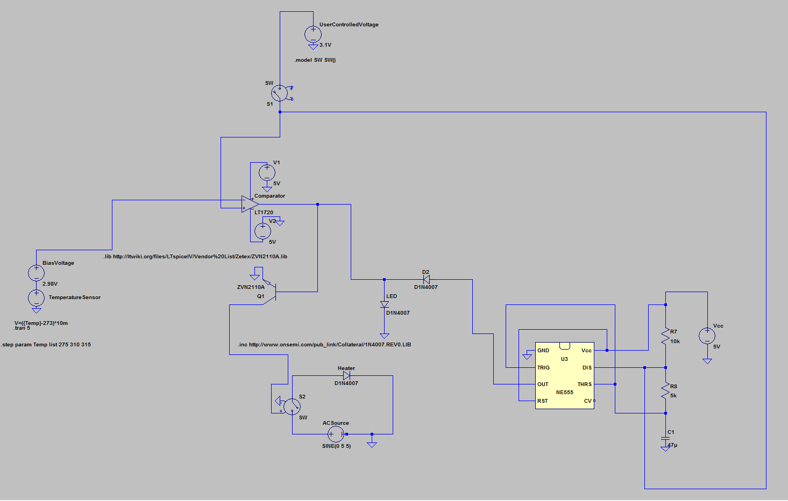

The Pre-Shower Water Heater is a water conservation system designed to drastically reduce annual freshwater consumption, awarded first prize in an Institute of Electrical and Electronics Engineers (IEEE) circuit design competition out of over 50 teams. The circuit's motivation came from the fact that most people run the water in their shower for a minute or so before stepping in to the shower to allow for the water to heat up to a comfortable temperature. This practice is extremely wasteful, and amounts to approximately 1.05 trillion liters of water wasted annually in the United States and Canada alone (see report for sources). Thus, this circuit eliminates that problem by introducing a way to provide people with water at a comfortable temperature immediately out of the shower or sink tap without any delay, allowing individuals to enter the shower or wash their hands comfortably the instant they turn the water on! It accomplishes this by storing most of the cold water remaining in the pipes running between your water heater and shower head (which is the cold water that needs to be flushed out before hot water flows through the shower head) in a heated basin, and allowing the user to heat up the water to any desired temperature with the turn of a dial. The user turns a dial and waits for the user interface to indicate that the water is heated, instead of running the water and waiting for it to get hot.
To learn more about the project, take a look at the full report by clicking on the button below. The report covers everything from the design process and market competitors to design details and prototype results. This project was completed with the help of a talented colleague Sean Santarossa. He is a fellow University of Windsor Electrical Engineering student and a good friend of mine.
The Pre-Shower Water Heater is an award-winning water conservation system designed to drastically reduce annual freshwater consumption. The prototype design was awarded first prize in an IEEE circuit design competition and the promotional video earned it first place in the 2017 EPIC Blue Sky Entrepreneurial Competition hosted by EPICentre.
The Pre-Shower Water Heater is an award-winning water conservation system designed to drastically reduce annual freshwater consumption. The system replaces conventional shower heads and sink faucets and is capable of providing hot water at any desired temperature the instant a shower or sink is turned on; no need to run the water (wastefully) to allow for it to heat up. The circuit achieved first place in an IEEE circuit design competition and was awarded top honours and funding in the 2017 Blue Sky Entrepreneurial Competition hosted by EPICentre – check out the pitch!
I believe the near future will present tremendous challenges for the next generation of engineers, particularly in fields encompassing resource management. An increasing human population means an increasing demand for valuable resources necessary for the wellbeing of every person on earth. As the world's population continues to increase, engineers must push the limits of ingenuity in order to sustain suitable living conditions for the many generations to come. This means engineers must create new ways to reduce resource consumption in order to develop the sustainable infrastructure necessary to accommodate everyone.
This is one of the primary reasons I decided to become an engineer; I've always been very passionate about the environment and I view technological development as a useful tool necessary for improving living conditions for all and promoting sustainable living. It is the responsibility of engineers to develop environmentally friendly solutions to everyday problems to reduce demand for natural resources. With that in mind, I couldn't help but notice an incredibly wasteful habit that I exercised every single day: running the shower for about a minute to allow the water to become a comfortable temperature before entering.
With that, I invite you to take a look at the following video of my team's proposal to put an end to "behavioural waste" resulting from running showers and faucets while waiting for the water to warm up. This video earned my team first place and funding in the 2017 Blue Sky Entrepreneurial Competition.
Since the purpose of the circuit was to heat water (an energy-intensive process), right away the team knew that the control circuit would need to act as the interface between the user and an AC heater. We chose to do this with a solid state relay that met our current requirements determined by the heater. We chose a 1000 watt coil heater (similar to those found in tea kettles) that we were able to obtain for just under $2.50. Thus, the current requirement of the AC circuit was: $$I=\frac{P}{V}=\frac{120\:V}{1000\:W}=8.33\:A$$ The solid state relay would need to be able to handle 8.33 amps of continuous current. We chose a relay rated for 10 amps of continous current that we were able to obtain for just under $4. The AC portion of the circuit forms a very simple loop with the relay, a manual switch for testing purposes (in case we had to manually shut off the load for any reason), and an electrical outlet wired in series. The heater was then plugged in to the electrical outlet to serve as the load. Heater Circuit: The AC-powered portion of the circuit responsible for heating the water.
Heater Circuit: The AC-powered portion of the circuit responsible for heating the water.
Now it's time for the good stuff – the IEEE award winning analog control circuit! The circuit won first prize based on its robust performance and simplistic, cost-effective design in a regional IEEE circuit design competition out of over 50 teams of undergraduate electrical engineering students. Let's dive into the schematic.
The Pitch: The promotional video that earned my team top prize and funding at the 2017 Blue Sky Entrepreneurial Competition.
As discussed in the video, it is very important to recognize the power of one. A single individual decreasing the quantity of a resource they use by a small amount may seem extremely insignificant when compared with large scale demands, however as more individuals partake in such practices, it has the effect of multiplying the impact of each person millions or even billions of times over leading to drastic reductions in the demand for a given resource. Put simply, "small changes add up". Significantly. This concept is the driving force behind the Pre-Shower Water Heater. Although it is important for corporations to implement sustainable development and manufacturing processes, it is equally important for individuals to recognize the environmental impact of their everyday decisions. Sustainable living is the result of both industrial and consumer level change.
One of the claims made in the video stated that our solution "has the potential of saving over 1 trillion liters of water per year". Let's prove how this is possible.
According to the United States Environmental Protections Agency, standard shower heads use 2.5 gallons (9.46 liters) of water per minute. This means that a standard shower uses 9.46 liters of water every minute. According to the United States Census Bureau, the population of America was 324,304,407 as of December 31, 2016. According to Statistics Canada, the population of Canada was 35,151,728 as of 2016. Therefore, if each person were to use the Pre-Shower Water Heater instead of running the water for one minute to allow the water to warm up, assuming all individuals shower 6 times per week, this equates to:
$$9.46\frac{L}{min}\times1\:min\times(324,304,407+35,151,728)\times\frac{6\:showers}{week}\times\frac{52\:weeks}{year}=1,060,941,971,575>1\:Trillion$$
The numbers considered in this estimate are rather modest. This considers only the poulation of the United States and Canada (total population of the world is much larger) and uses the moderate assumption that people shower 6 times per week, whereas the global average is much closer to 7 showers per week.
Before we get in to the technical details of the design, let's consider the main objectives of the project.
Design Objectives:
- Heat water from a conventional sink or shower head quickly and efficiently
- Allow the user to set the temperature of the water to any (safe) desired value
- Provide a user interface to notify the user when the water is hot
- Separate the main electronic controller from the water heater circuit (physically and electrically)
- Analog electrical components only
- $10 budget
- 12 weeks to implement a fully functional prototype
The Load Circuit
Since the purpose of the circuit was to heat water (an energy-intensive process), right away the team knew that the control circuit would need to act as the interface between the user and an AC heater. We chose to do this with a solid state relay that met our current requirements determined by the heater. We chose a 1000 watt coil heater (similar to those found in tea kettles) that we were able to obtain for just under $2.50. Thus, the current requirement of the AC circuit was: $$I=\frac{P}{V}=\frac{120\:V}{1000\:W}=8.33\:A$$ The solid state relay would need to be able to handle 8.33 amps of continuous current. We chose a relay rated for 10 amps of continous current that we were able to obtain for just under $4. The AC portion of the circuit forms a very simple loop with the relay, a manual switch for testing purposes (in case we had to manually shut off the load for any reason), and an electrical outlet wired in series. The heater was then plugged in to the electrical outlet to serve as the load.
Heater Circuit: The AC-powered portion of the circuit responsible for heating the water.The Control Circuit
Now it's time for the good stuff – the IEEE award winning analog control circuit! The circuit won first prize based on its robust performance and simplistic, cost-effective design in a regional IEEE circuit design competition out of over 50 teams of undergraduate electrical engineering students. Let's dive into the schematic.

Controller Circuit: The DC-powered portion of the circuit responsible for directing and monitoring the heater's operation.
Note that this circuit schematic was created and tested using LTspice. Detailed simulation results can be seen in the complete project report.
High-Level Overview:
Before I describe how the circuit functions, I'll first describe its operation from a high level. The circuit utilizes a nagative feedback loop comparing the output voltage of a temperature sensor (which measures the temperature of the water) with an input voltage provided by the user. The voltage level supplied by the user corresponds to a specific water temperature (more on this later). If the user-supplied voltage is greater than the output voltage of the temperature sensor, then the output of an analog comparator is high, else its output is low. When the comparator output is high, the relay interfacing between the control circuit and the load circuit is energized causing the coil heater to turn on. The heater will remain on until the output voltage of the temperature sensor is equivalent to the user-supplied voltage. When this happens, the water has reached the desired temperature and is ready to be consumed. As long as power is supplied to the circuit, the desired water temperatue will be maintained; as the water cools off due to the lower temperature of the surrounding environment, the output of the temperature sensor will decrease below the user-supplied voltage thus causing the comparator output to go high which energizes the water heater again until the desired temperature is once again achieved. The "user interface" consists of a potentiometer input and a red LED output. The user rotates the potentiometer until the input voltage corresponding to the desired water temperature is achieved. The LED is used to indicate what mode of operation the circuit is currently operating in. There are three LED states:- Off – the user has switched power off indicating that they do not want to heat water at this time
- On – the heater is energized and water is currently being heated
- Flashing – the water has reached the desired temperature and is ready for use